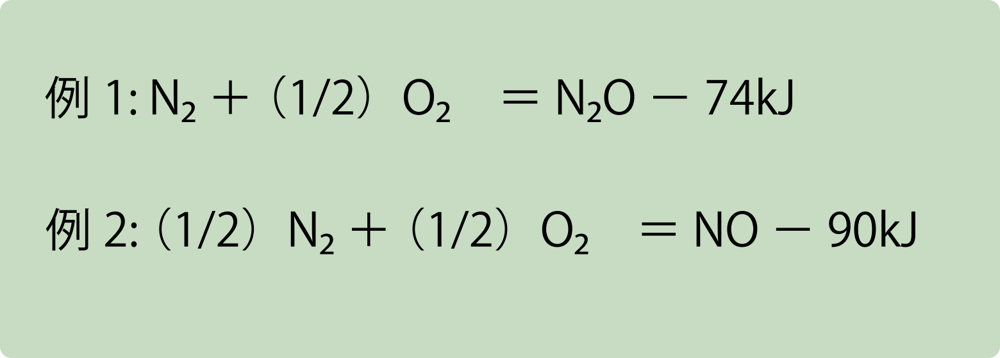
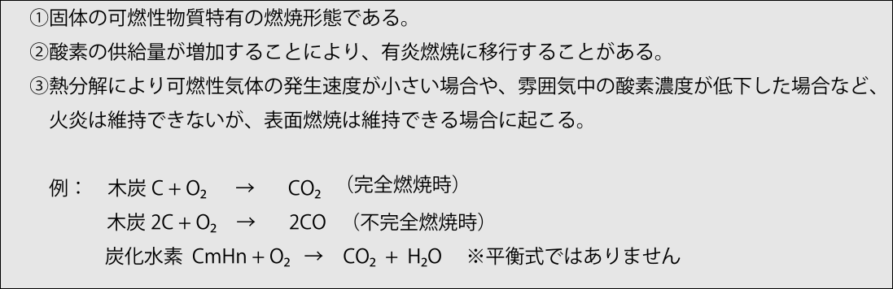
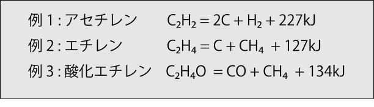
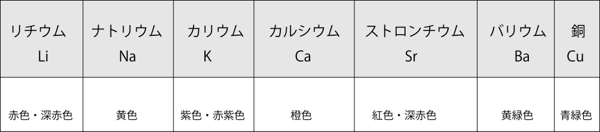

燃焼の定義
物質が酸素と結びつく反応を酸化といい、その結果生じる生成物を酸化物と呼びます。例えば、炭素が酸素と反応すると二酸化炭素が生じます。このとき、炭素は酸化されて、酸化物である二酸化炭素へと変化したことになります。
酸化反応の中には、化合が急激に進行して多量の熱を発し、さらに発光を伴うものがあります。このように、熱と発光を伴って進行する酸化反応を、燃焼といいます。
鉄（Fe）は酸化するとさびが生じますが、これを燃焼とはいいません。なぜなら、著しい発熱や発光を伴わないからです。なお、酸化反応であっても吸熱反応として進行するものは、燃焼には該当しません。

物質は燃焼によって、より安定した化学的性質をもつ物質へと変化します。
無炎燃焼
燃焼には、火炎を伴う有炎燃焼と、火炎を伴わない無炎燃焼があります。無炎燃焼は燻燃（くんねん）とも呼ばれ、一般に多量の煙を発生しやすく、一酸化炭素などの有害ガスを生じるおそれがあります。
無炎燃焼は、タバコや線香のような燃焼にみられ、以下のような特徴があります。

ガスの分解爆発
アセチレン、エチレン、酸化エチレンなどの気体は、たとえ空気などの支燃性（助燃性）ガスが存在しない場合でも、単体のままで火花、加熱、衝撃、摩擦などの刺激により分解爆発を起こすことがあります。このような分解爆発では、分子が自ら分解する過程で大量の熱が発生します。

燃焼の三要素
燃焼の三要素とは、燃焼が発生するために必要な3つの条件を指します。これらのうち、いずれか1つでも欠けると、燃焼は成立しません。
可燃物とは、点火されるとよく燃焼する性質をもつ物質のことであり、代表的なものに水素、一酸化炭素、硫黄、木材、石炭、ガソリン、プロパンなどがあります。
酸素供給源には、空気のほか、第1類危険物（酸化性固体）や第6類危険物（酸化性液体）などが含まれます。これらの酸化性物質は、化学反応の相手に酸素を供給する性質をもつため、可燃物と混合すると非常に危険です。
また、第5類危険物（自己反応性物質）の多くは、分子内に酸素を含んでおり、さらに自らが可燃性であるため、可燃物と酸素供給源が一体となった状態になっています。このような性質をもつ物質は、特に注意が必要です。
酸素濃度が高くなると、同じ物質であっても着火温度が低下するため、火がつきやすくなります。さらに、火炎温度も上昇することから、可燃性ガスが発生しやすくなり、燃焼速度や火炎の拡がる速度も増大します。
点火源（または熱源）には、代表的なものとして火気のほか、火花（金属の衝撃による火花や静電気の放電）、摩擦熱、過電流、高温体などが挙げられます。
燃焼時に酸素の供給が不十分になると、一酸化炭素（CO）が発生することがあります。一酸化炭素は、人体に対して非常に有毒な気体です。
二酸化炭素（CO₂）は、すでに最も酸化が進んだ状態にあるため、可燃物ではありません。一方、一酸化炭素（CO）は、さらに酸化して二酸化炭素となることができるため、可燃性をもつ物質に分類されます。
不活性ガスとは、反応性が非常に低く、消火剤や反応性物質の保存などに用いられる気体のことを指します。最も一般的に使用されている不活性ガスには、窒素やアルゴンがあります。不活性ガスには、単一の元素からなるものと、二酸化炭素（CO₂）のように化合物で構成されるものがあります。
ヘリウム（He）、ネオン（Ne）、アルゴン（Ar）、クリプトン（Kr）、キセノン（Xe）、ラドン（Rn）など、周期表の第18族に属する元素は、まとめて希ガスと呼ばれます。これらの元素は、イオン化されにくく、他の原子や分子と結合して化合物をつくることがほとんどないという特徴をもちます。そのため、不活性ガスとして広く利用されています。いずれも不燃性で、無色無臭の気体です。
炎色反応
炎色反応とは、アルカリ金属やアルカリ土類金属、銅などの金属元素を無色の炎の中に入れたときに、その元素特有の色が炎に現れる現象です。

※すべての元素が炎色反応を示すわけではありません。
有機物の燃焼
ガソリンや灯油などの液体有機物は、一般に蒸発燃焼を起こします。一方、木材や石炭などの固体有機物は、通常分解燃焼によって燃えます。
一般に、有機物のうち液体は蒸発燃焼、固体は分解燃焼を示す場合が多く見られます。
すすとは、可燃性ガス中に含まれる炭素粒子が高温下でも燃焼せず、単独で分離したものを指します。これは、空気（酸素）の供給が部分的に不足しているときに発生し、黒煙とも呼ばれます。
不完全燃焼が起こると、すすの発生量が増加するとともに、可燃性ガス中の炭素が十分に酸化されず、結果として一酸化炭素（CO）の生成量も多くなります。
クイズ
次のうち、燃焼の三要素に該当しないものはどれか？
次は燃焼の区分に進みます。